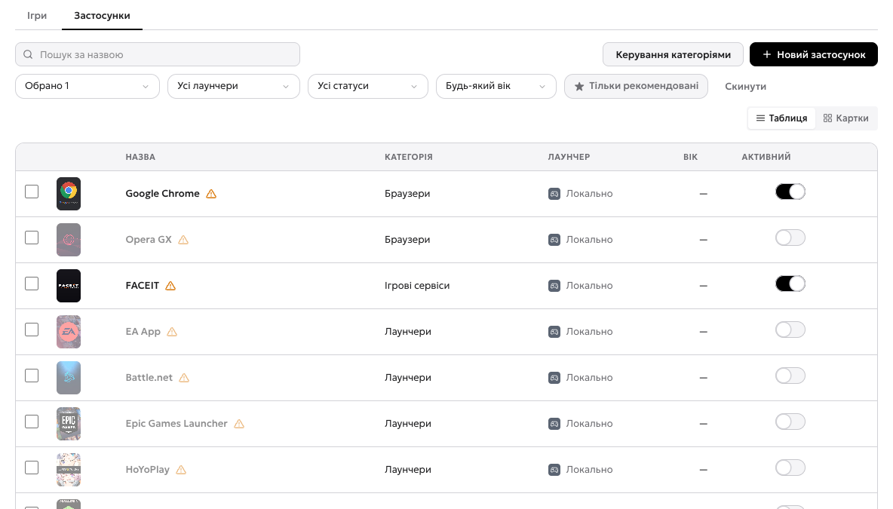
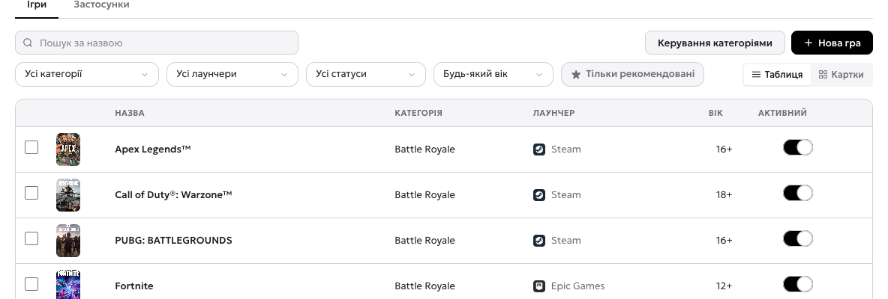
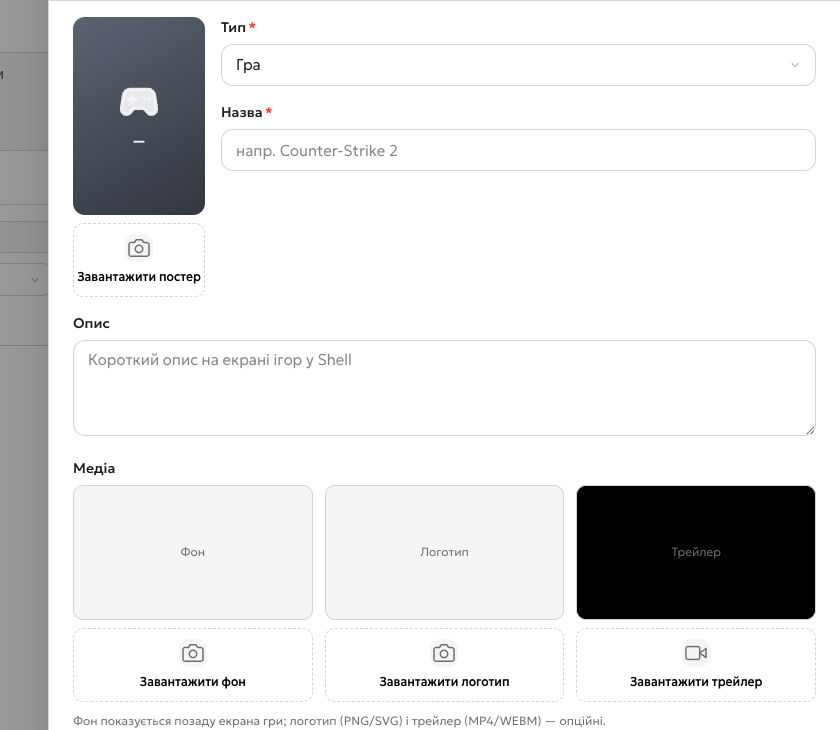
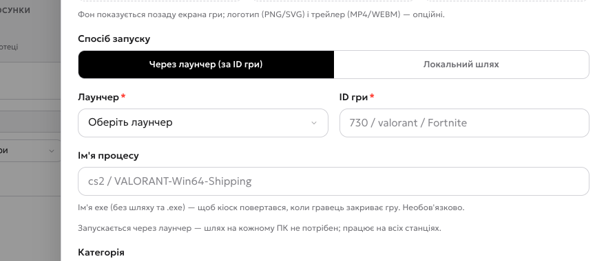

Каталог уже заповнений, але все вимкнено
У новому клубі в каталозі вже 88 ігор і 23 застосунків — ми заводимо їх за вас, щоб ви не вписували руками обкладинки, категорії, віковий рейтинг, лаунчер та ID гри. Але всі вони вимкнені: поки ви не увімкнули гру, на екрані гостя її немає. Каталог — це заготовка, з якої ви збираєте свій зал.
Спершу — шляхи до лаунчерів
Це найперше, що треба зробити, і саме тут найчастіше застрягають. Ігри з каталогу запускаються через лаунчер: вони не знають шляху до себе, вони знають лише свій ID у Steam, Epic чи Battle.net. Тому шлях треба вказати один раз для самого лаунчера — і всі його ігри запускатимуться.
- 1Вкладка «Застосунки» — лаунчери живуть тут, не серед ігор.
- 2Категорія «Лаунчери» — Steam, Epic, Battle.net та решта платформ.
- 3Жовтий трикутник біля назви — шлях до цього лаунчера ще не вказаний. Саме його треба заповнити першим.

Steam.exe, Shell не зможе запустити ні одну з них, хоча в панелі вони будуть увімкнені. У самій грі шлях вказувати не треба — тільки в лаунчері..exe. Якщо в залах різні диски, можна вказати до трьох шляхів.Додати гру з каталогу — один клік
Гру з каталогу не потрібно «створювати». Пишете в пошуку «counter» — каталог одразу показує Counter-Strike 2, і ви вмикаєте перемикач «Активний». Усе: гра зʼявилась на екрані гостя. Лаунчер та ID уже прописані в каталозі, заповнювати нічого не треба. Вимкнули — зникла з екрана, але лишилась у каталозі.
- 1Перемикач «Активний» — це і є «додати» гру, яка вже є в бібліотеці: увімкнули — вона зʼявилась у гостя на екрані, вимкнули — зникла. Нічого заповнювати не треба.
- 2Пошук за назвою — найшвидший спосіб знайти гру у списку з сотні.
- 3Лаунчери — фільтр за платформою, звідки гра запускається.
- 4Віковий рейтинг — 12+, 16+, 18+. Знадобиться, якщо у вас є дитячі години або зона.

Гра не з лаунчера — потрібен шлях до .exe
Якщо гри немає в каталозі або вона запускається без лаунчера
(власна збірка, портативна версія, інді), додаєте її самі — і ось тут
шлях до .exe обовʼязковий. Обкладинку для такої гри теж
ставите самі: у бібліотечних вона підтягується, у своєї — ні.
- 1Тип — «Гра» або «Застосунок». Застосунки (браузер, Discord, FACEIT) додаються тут же, тільки другим типом.
- 2Назва — так гру побачить гість на екрані машини.
- 3Постер — вертикальна обкладинка, як у бібліотечних ігор. Для своєї гри картинку ставите самі.
- 4Фон — широке зображення, яке Shell показує позаду екрана гри.
- 5Логотип — PNG або SVG, необовʼязково; ставиться поверх фону.

- 1Через лаунчер — гра запускається платформою: Steam, Epic, Battle.net та інші.
- 2Локальний шлях — другий спосіб: запуск напряму через
.exeна клубному ПК. Потрібен для ігор без лаунчера й для власних збірок. - 3Лаунчер — обираєте зі списку платформ.
- 4ID гри в лаунчері — для Steam це номер із адреси сторінки гри (наприклад
1030300). - 5Процес — необовʼязково: за ним система розуміє, що гра справді запущена.

.exe на клубному ПК, за потреби аргументи й робочу папку..exe — інакше форма просто залишиться відкритою.Відео: каталог і додавання гри
Запис у демо-клубі: каталог у двох виглядах, фільтри, список лаунчерів і додавання гри за назвою, лаунчером та ID.
Наступний розділ
Клуб описаний і має ціни й ігри. Далі — програма на самих машинах:
- Де взяти Shell — інсталятор і ключ клубу в налаштуваннях.
- Сервісний доступ — пароль, без якого не вийти з кіоску.
- Встановлення на ПК — усі пʼять кроків інсталятора й перша привʼязка.
- Екран гостя — вхід за QR, бар, новини, рейтинг.